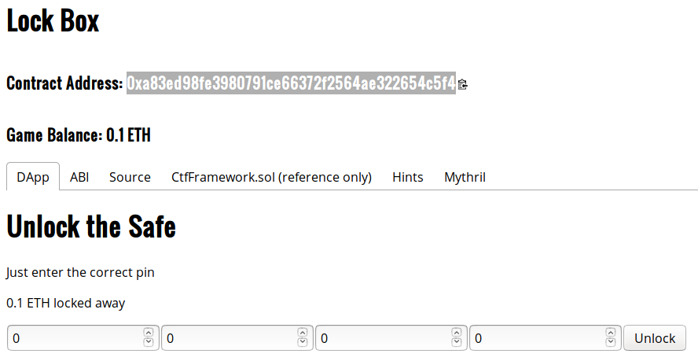
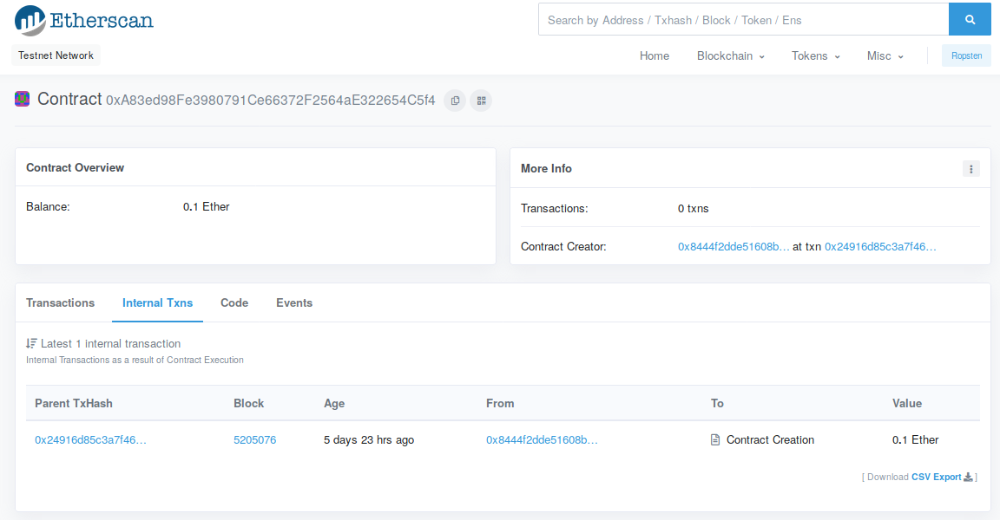
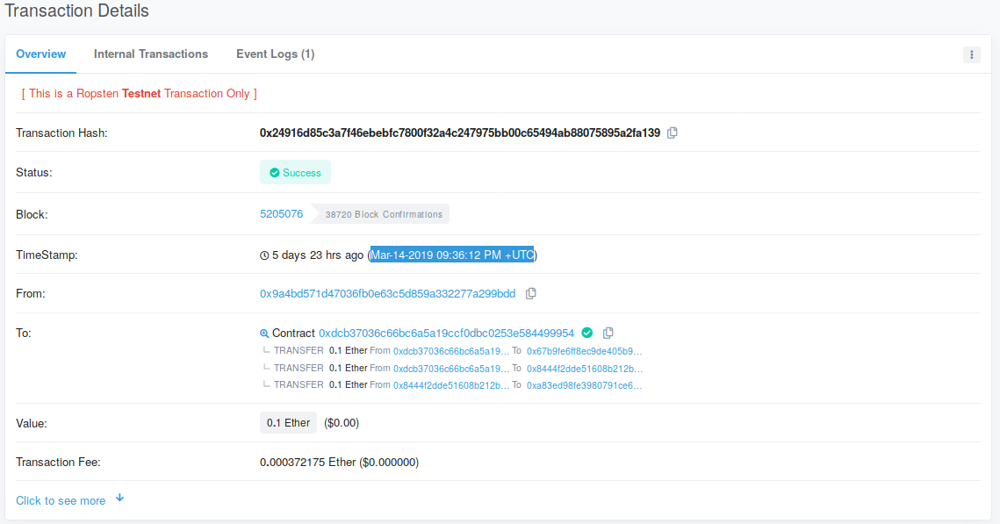

In this level, you will employ the Manticore symbolic execution engine to automatically generate a transaction that will solve the Lockbox CTF level. You will then be able to directly submit solutions to the CTF framework using geth.
geth and tmux sessionsConnect back into VM you installed geth and manticore into. Within the VM, re-attach to your tmux session (or recreate it using the directions from the previous lab)
tmux attach
Ideally, you should have at least 3 sessions.
geth session synchronizing the light node with the Ropsten network viageth \ --allow-insecure-unlock \ --ropsten \ --http --http.addr 127.0.0.1 \ --http.port 8545 --http.api admin,eth,net,web3,personal \ --nousb
geth attach http://127.0.0.1:8545/
cs410b-src/manticore_labs/manticore_scripts, for editing the Manticore solution scripts and running them.Recall that this level requires you to calculate when the contract was instantiated in order to determine the PIN code to obtain its balance.
contract Lockbox1 is CtfFramework{
uint256 private pin;
constructor(address _ctfLauncher, address _player) public payable
CtfFramework(_ctfLauncher, _player)
{
pin = now%10000;
}
function unlock(uint256 _pin) external ctf{
require(pin == _pin, "Incorrect PIN");
msg.sender.transfer(address(this).balance);
}
}
For the Lock Box level, you'll need to give manticore the timestamp of the transaction that created your CTF contract in order for it to find the correct exploit. To do this, copy and paste your CTF contract's address into etherscan.

Then, goto the "internal transactions" tab:

Then, click on the transaction that created the contract (this may be far down the list or on another page if you've interacted with this contract):

Copy the timestamp from here. You can convert it with the date command in Linux and use the numeric timestamp in your script to solve the level.
$ date -d 'Mar-13-2019 08:09:17 PM +UTC' +%s 1552507757
The symbolic execution script works as before, but requires three things: the contract's timestamp to initialize the EVM used to perform the symbolic execution, the contract balance which is used as a goal for the script to withdraw, and the parts of the transaction data to make symbolic. For transaction data, this typically includes the 4-byte function hash along with any parameter data that might be needed to invoke the 'winning' transaction. Begin by making a copy of the lockbox_solution.py script and edit it to supply these values.
contract_balance = ???
initial_world = evm.EVMWorld(initial_constraints, timestamp=???)
sym_args = m.make_symbolic_buffer(4+???)Note that you must make enough of the transaction data (sym_args) symbolic. To calculate this, recall that the parameters for a function call are included right after the 4 byte hash (which has been taken into account in the script). Calculate the additional bytes you must make symbolic to capture the parameters for potential function calls. Typically, this would be the maximum number of bytes that are required to specify the entire parameter list for any of the contract's functions. Since the Lockbox contract has only one main function (unlock), use the size of its parameter list to add to the size of the symbolic buffer.
As done previously, copy the transaction that Manticore finds into the interactive geth session. Execute the transaction and take a screenshot of the resultant transaction hash. Then look the transaction up on Etherscan and take a screenshot of it. Include both in your lab notebook. You do not need to commit the code into your repository.
Congratulations on applying symbolic execution to solve the Lockbox level. Continue to the next level for more!